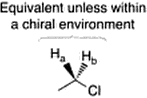
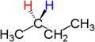

Stereochemistry and Topicity
Topicity describes the symmetry relationship of two or more groups (or atoms) in a molecule that have identical connectivities (i.e., they are connected to the molecule in the same way). Stereochemistry can affect chemical shift. Depending on the symmetry of the molecule, otherwise equivalent atoms may be homotopic, enantiotopic or diasterotopic.
For a pair of protons to be tested, replace one and then the other with another group (one not present in the molecule). Compare the two structures formed. If they are identical, the protons are homotopic, if they are enantiomers, the protons are enantiotopic, if they are diastereomers then the protons are diastereotopic, if they are structural isomers, the protons are constitutionally heterotopic.
Homotopic protons
Homotopic groups (protons) are related to each other either by a bond rotation or an axis of rotation in the molecule.
For example, the methylene protons of (S,S)-2,4-dihydroglutaric acid can be exchanged by rotation about a C2-axis, Figure 1. The protons are therefore chemically equivalent and part of an A2B system, whereas the meso isomer carries diasterotopic methylene protons that establish an ABC system.
Enantiotopic groups
Enantiotopic groups are related to each other by a reflective symmetry element (the most common being a mirror plane within the molecule).
A plane of symmetry exists if one half of the molecule is the mirror image of the other half.
If groups can be designated as either homotopic or enantiotopic, they are homotopic (i.e., homotopic takes precedence).
Un altro esempio sono gli idrogeni legati al secondo carbonio nel butano:
Chiral solvents or chiral reagents can distinguish between a pait of enantiotopic protos in an NMR experiment.
Diasterotopic protons
Diastereotopic groups are in different environments. They are not related to each other by any symmetry element. For example, the red and blue hydrogens in the molecule shown below are not related to each other by any symmetry element. As we saw in the previous slide, there is a mirror plane in the molecule, but it does not interconvert those hydrogens with each other. Another way to look at it is that the red hydrogen is always syn- to the methyl group while the blue hydrogen is always anti- to the methyl group.
A CH2 group consisting of a pair of diasterotopic proton is shown in the next figure; the chiral center is shown by an asterisk:
But a chiral center is not necessary for the occurence of diasterotopic protons. The achiral molecule, 3-hydroxyglutaric acid, has a plane of symmetry, perpendicular to the page through the middle carbon atom, through which the two Ha protons interchange and the two Hb protons interchange, as enantiotopes.
Un altro modo per provare se due protoni sono diasterotopici è di sostituirli con due gruppi diversi: